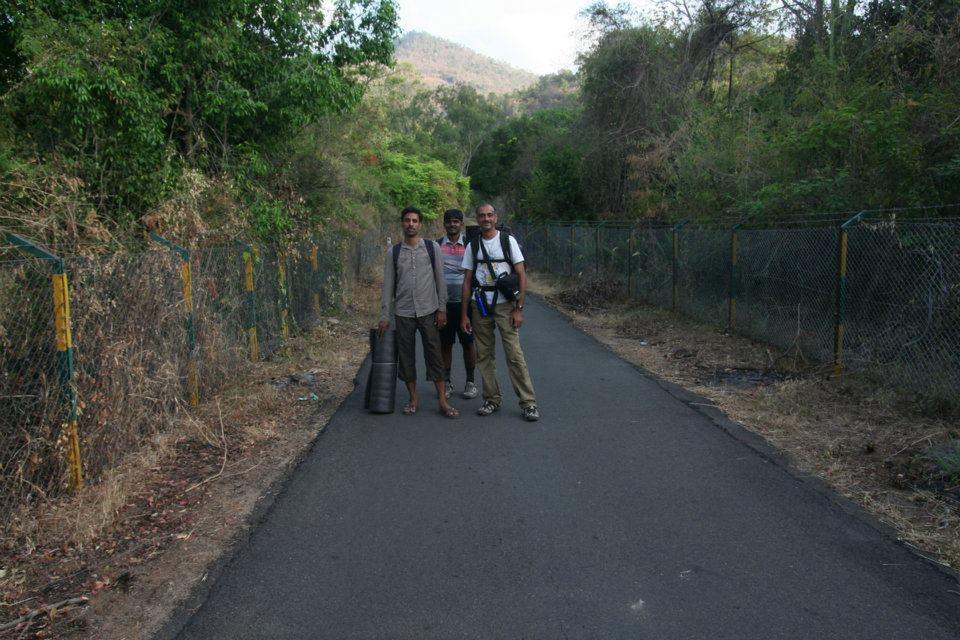
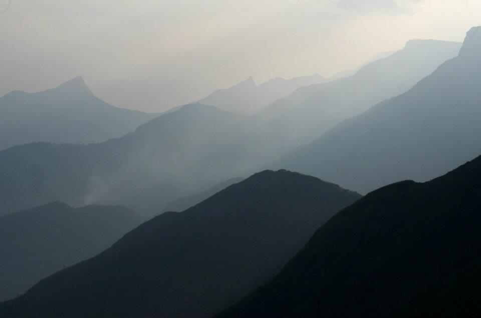
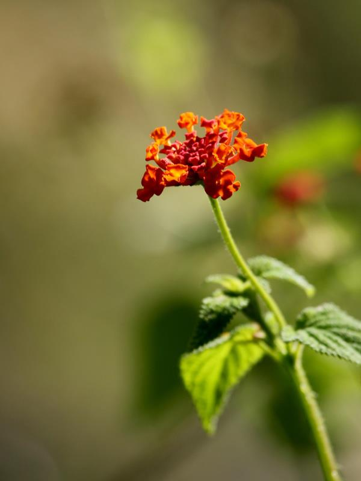
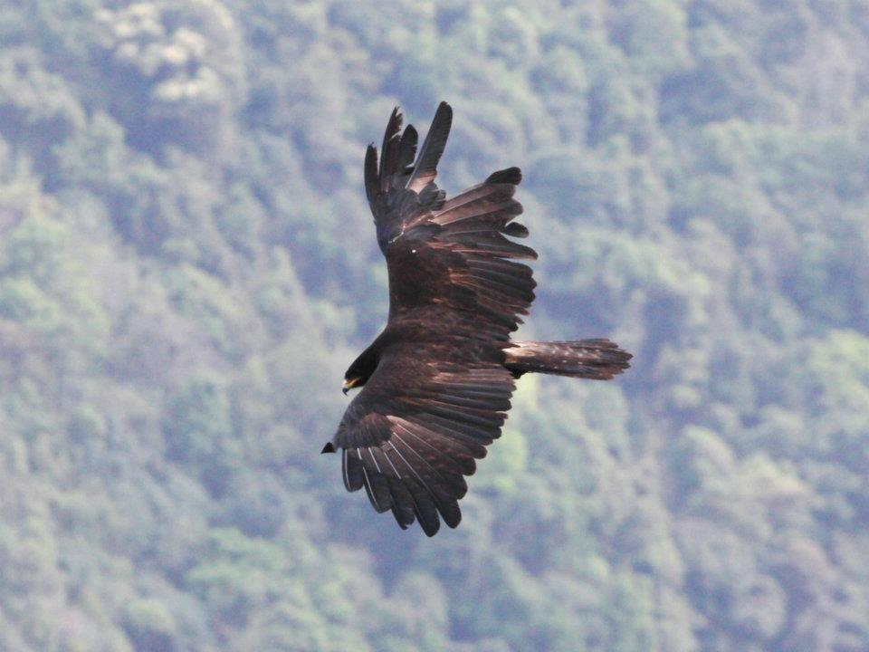

Kumbakarai to Kodaikanal

It was a decision made over just a couple of days. A weekend trek to help prepare for the big one in the Himalayas that lay ahead in May. We learnt about this route from Kumbakarai falls to Kodaikanal which seemed to be [relatively well documented][1] and decided on it. Prasanna, Vishravars and Arun drove from Chennai and picked me up in Tindivanam. After a dinner of tasty idlis at Prasanna’s place, we proceeded towards Dindigul. From Dindigul, we traveled to Periakulam and on towards the falls. Some distance before entering the Kumbakarai main road, we decided to catch some sleep by the roadside. Lying down at 3.30 am under a tree near a temple, it seemed idyllic until a squadron of marauding mosquitoes found us. We managed to sleep a little by crawling into the sleeping bags. We were back on the road at 5.30, had some idlis (again!) in Kumbakarai and were at the falls by 7.30 am.
We started climbing at about 7.45 am and [this blog][2] was very helpful with finding the right path in the first part. After that it is pretty much a straight trail that is easy to follow. We reached Vannathi Odai in about 30 minutes and were expecting some water, but it turned out to be bone dry. From here on, the trail was pretty steep and it was fairly hot too. Because of the conflicting information about the difficulty of the trek and the time needed to cross the trail, we had come fully prepared with sleeping bags, mats and so on. This added to the heat and the steepness to make it very tiring. By about 10 am, we lay down in a small clearing for a 45 minute rest. From here Vellagavi turned out to be almost 2 hours climb in hot sun up a steep gradient.
Vellagavi turned out to be a small, charming village where we had lunch and lay down for another rest. Vish woke up after a nightmare of getting lost in mist and wanted us to hurry on. We started off at 2.30 pm and continued climbing.
The heat did not abate even though we were higher now. About 5.30 we reached the Dolphin Nose point (Vattakanal). It turned out to be a little bit of an anticlimax as there was a further hour’s walk across a path criss crossed with roots before we got to the road. Once in Vattakanale, we stopped at a cottage where the owner also got us hot water for everyone to bathe and a fantastic hot dinner of chapatthis with chicken. After the hot day’s climb, Thattakanal was surprisingly cold in the night, but we were all exhausted and slept well under warm blankets.

The next day, we started by about 7.30 am on the descent. It took 5 hours of steep climbing down to return to Kumbakarai. The chilled water in the pools was perfect after the hot day and we soaked for a few minutes before starting the drive back. All in all, this turned out to be a good, tough trek. My own impression is that this is a trek that is better done in Jan or Feb - it was already too hot and dry in March. If you are a fairly regular trekker, it is very much possible to climb up to the top in about 8-10 hours, so it is worth taking a light backpack and starting early.
For beginners, staying at Vellagavi is an option - this should take about 5 hours from Kumbakarai, so one can start a little later too. It seems extremely unlikely one would encounter wild animals besides such a well used trail. We heard no stories from the villagers either about any encounters with bears or gaur on the trail. There is a fair amount of birdlife along the way - mostly bulbuls and drongos, some bee-eaters and a few other species. You can read the account by Vish, one of my trekmates, for another view of the trek.
Comments
Comments powered by Disqus